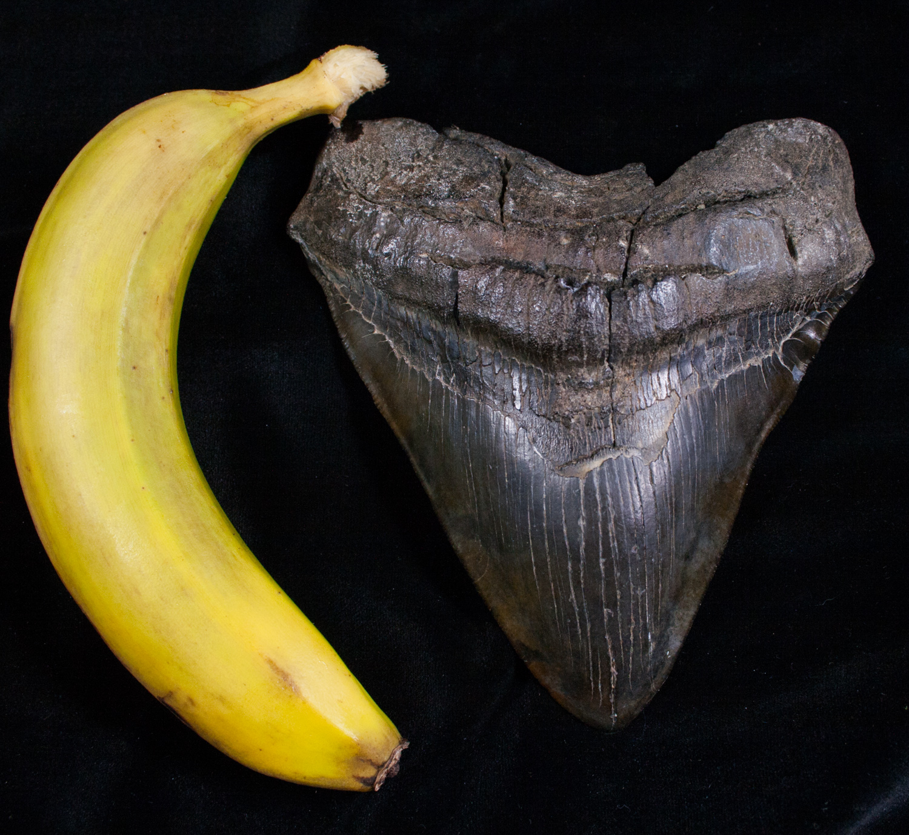
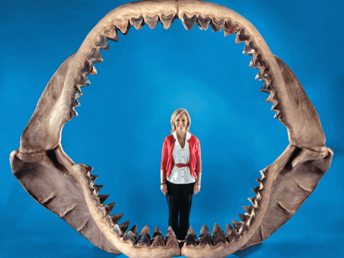

The megalodon was the largest shark ever to have lived, believed to have reached 50 to 70 feet (15.2 to 21.3 meters) long. It is believed that it was much smaller but then started to evolve and get bigger and bigger. The megalodon has been extinct for over 2.6 million years. However, there are false rumore or claims of people seeing Megalodons around the world.
Large teeth
The word megalodon comes from two Greek words — megas, meaning big, and odont, meaning tooth. There teeth mesausred to be 7 inches and sometimes even bigger than that. The Megalodon had 276 teeth in 5 rows. These Megalodon teeth can be sold for some serious dough. The last 7inch Megalodon tooth was sold for over 50,000 dollars. While the small broken teeth can be sold very small amounts.

Big bite
The Megalodon has a big bite, it's bite is estimated to be 24,000 to 41,000 pounds of force. That is 10 times stronger than a great white shark. Its jaw is about 9 feet tall, and 11 feet wide. That is enough space to swallow and entire school bus and have room to keep going. Their bites were so huge and so strong, they could feed on whales. The megalodon was believed to eat a ton of food of food a day. That is 2,000 pounds of animals that they found in the ocean.

Similarties and differnces between the Great White and the Megalodon
- They both have massive bites however, the Megalodons is much greater in size and in power.
- They are both one of the biggest sharks out in the wild. If the Megalodon still lived today then the great white would look like a shrimp in comparison.
- They both consume anything and everything. The Megalodon just does it on a much larger scale.
-